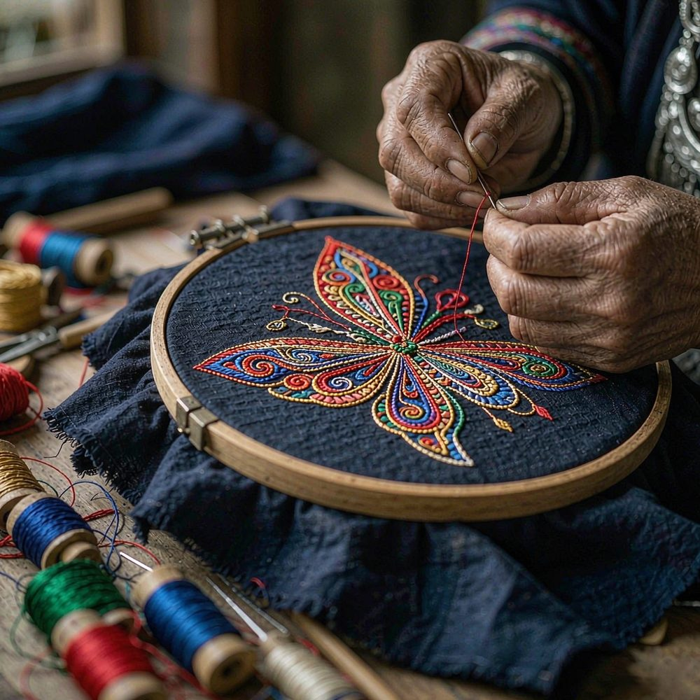

A Bilingual Heritage Journal
Learn to tell
a Guizhou story,
in English.
跟着 Rita 走进贵州山间，选一个主题学三句英语，盖一枚章。集满 40 枚，就是一本属于你的贵州非遗护照。
40Themes
4Chapters
3Quests
1Passport
The Three Threads
黔 · 三条线
苗绣几何、蜡染冰裂、侗族鼓楼 —— 贵州非遗里最有视觉辨识度的三种工艺，也是 Rita 带你去看的第一道风景。
No. 01

Embroidery
苗 · 绣
600 年几何纹样，从蝴蝶到鱼龙。苗族把族群记忆绣进每一针 —— Rita 在第一个主题里就带你认 12 个针法名词。
No. 02

Batik
蜡 · 染
唐代至今的蓝白哲学。蜂蜡裂痕即冰，冰即花 —— 蜡染不是染出来的，是"留白"出来的。
No. 03

Drum Tower
侗 · 鼓
侗寨之心。不用一钉一铆，全靠榫卯 —— 一座鼓楼立起来，整个村寨就有了"广场"。
Field Notes
田野 · 四个瞬间
蜡刀起落、银冠叮当、长桌摆开、大歌起调 —— 这些画面，就是你将要学会讲述的故事。
The Learning Path
学习主线 · 三步走
闯关地图给「推进感」，集章护照做「主载体」，赛季打卡定「节奏」—— 三件事各司其职，学习才走得远。


成效报告：掌握度、学习轨迹、待强化词与自动建议，一页可打印，面向学校与家长交付。
查看示例报告The 40 Stamps
40 枚章 · 一本贵州护照
三关闯过，AI 实时纠错，章戳入册。下面是你会拿到的前八枚 —— 完整 40 枚在地图上等你。
闯关流程 · How the quest works
I
Vocabulary
词汇 · 听词、认词、读音、拼写
II
Dialogue
对话 · 场景英语，开口敢说
III
Translation
翻译 · 中译英、英译中，AI 评分
First 8 of 40 Stamps